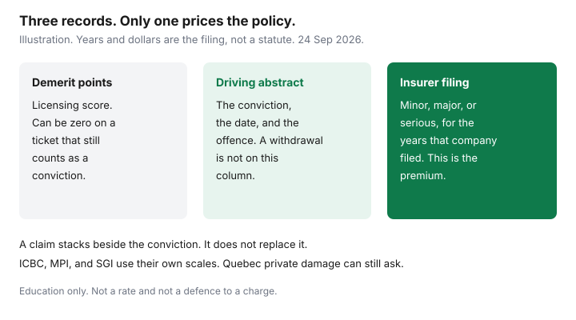

Insurance · Canada
How Traffic Convictions Raise Canadian Auto Insurance—and What You Can Still Do
A speeding ticket does not move a national points score that every insurer must use. In the private-market provinces the insurer reads a conviction on a driving abstract, then applies a rule it has filed. Demerit points are a licensing score kept by the province. They can be zero on a ticket that still shows up as a conviction. This page is the abstract method for a household that just got a ticket: what usually re-rates a premium, how look-back years stack with claims, when court is an insurance decision, what you must disclose, and when a course does nothing. It is education. It is not a defence to a charge and not a quote.
British Columbia, Manitoba, and Saskatchewan price convictions inside public auto systems. Québec’s public plan is the injury side; private damage coverage can still ask about the record. The worksheets below say which system you are in. They do not copy a U.S. point table onto a Canadian policy.
Disclosure: This page is education. Broker quote portals are an offer type some households use to compare markets. Saving Optimizer may earn a commission if partner links are added later. We do not currently claim a broker or insurer partnership, and we do not rank companies. We do not sell policies and we do not tell you how to plead to a ticket. Figures and rules below were read on 24 Sep 2026 and can change. Confirm the filing and the abstract before you rely on a dollar.
Key takeaways
- The premium follows a conviction on the abstract under the insurer’s filed rule. Ministry demerit points are a separate licensing score.
- Minor speeding, careless-style offences, and Criminal Code driving offences are usually different categories. The number of years is the filing, not a federal statute.
- A conviction and an at-fault claim stack. They are two columns on the renewal, not one blended “record.”
- Paying a ticket is usually a conviction. A withdrawal or acquittal is not. Ask whether the insurer counts the offence date or the conviction date before you decide to fight.
- Ontario’s automobile insurance regulation limits when a lapse can be rated, and a conviction you failed to disclose is one of the exceptions. Answer the application from the abstract, not from memory.
- A driver-improvement course does not erase a conviction. Ask, in writing, whether that insurer’s filing gives a discount for the named course.
Which tickets and Criminal Code driving offences typically re-rate premiums
Start with the paper, not the roadside conversation. A conviction is what a court enters after a guilty plea, a payment that the province treats as a plea, or a finding of guilt. A ticket that is withdrawn, stayed, or dismissed is not a conviction. Demerit points, where the province uses them, are added on top of some convictions for licensing. An insurer can rate a conviction the licensing office scores at zero points.
| What happened | Where it lives | What to ask the insurer |
|---|---|---|
| Speeding or another Highway Traffic Act-style ticket | Often filed as a minor conviction once it is on the abstract. Points may be zero. | Is this minor in your filing, for how many years, and from which date? |
| Careless, stunt, racing, or a similar serious provincial offence | Often filed as major rather than minor. Some companies also use it as a reason not to renew. | Major or serious, and is it an underwriting decline as well as a price? |
| Criminal Code driving offence | Impaired driving, dangerous driving, failure to remain, and criminal negligence are the usual examples. These are not “points.” | Serious-conviction years, and whether the company will keep the policy at renewal. |
| At-fault or not-at-fault claim | A claims record, separate from the conviction column. | Use the claim-impact guide. Do not let a broker fold it into the ticket. |
FSRA’s consumer page on what determines an Ontario auto rate lists driving record as one of the factors the company puts in your profile, alongside the vehicle, where you live, how much you drive, and the coverage you buy. The same regulator’s page on declined or non-renewed policies says underwriting rules differ by company, must be filed and approved, and commonly include “more than a certain number” of convictions or at-fault accidents. If a company refuses to sell or renew, it has to tell you in writing which rule it used. There is no FSRA table that says every speeding ticket costs the same dollar.
Outside Ontario the label changes and the habit does not. ICBC publishes its own driver penalty point premium and driver risk premium on basic insurance; optional coverage can rate as well. Read that beside the ICBC shopping guide, not as an Ontario broker quote. Manitoba Public Insurance and SGI move a driver safety rating when convictions land. Québec’s SAAQ plan is the public injury system; a private Section B policy can still ask about convictions. The SAAQ and private damage guide is the split. Do not shop a Montréal policy with an Ontario conviction worksheet and call it done.
Conviction look-back periods and stacking with prior claims
There is no Canada-wide statute that says a minor conviction drops off an auto premium after three years, or a Criminal Code conviction after six. Companies file the windows. A careful broker can tell you the minor window, the major window, and the serious window on the form they are using today. Write those three numbers down. If they cannot tell you, you do not have a comparison yet.
Also write the date the insurer uses. Some filings run from the offence date. Some run from the conviction date, which is later if the matter sat in court. A later conviction date can keep a surcharge on the policy after you thought the ticket was “old.” That single question changes the court math in the next section.
| Piece | Labelled figure | What it is for |
|---|---|---|
| Clean premium | $1,840 | Same liability, same deductibles, same listed drivers, no conviction in the filed window. |
| One minor conviction, still inside a 3-year filed window | $2,260 | The difference is $420 a year in this sketch. Three years of that difference is $1,260 if the window really is three years and nothing else changes. |
| Same conviction plus one at-fault claim | $2,710 | The claim is a second filed factor. It does not replace the conviction line. See the claim guide for how long claims are usually filed. |

Household drivers stack too. A conviction on a listed secondary driver can re-rate the car they are assigned to, and sometimes the policy, under that company’s rule for occasional versus principal operators. Hiding a licensed household driver is a different problem from a ticket. The young-driver guide is the assignment rule. A conviction on your own abstract does not give you permission to take a teen off the policy.
Do not add a friend’s “three years for minors, six for majors” to your budget as if it were law. Ask this insurer, on this vehicle, for the years in the filing. A public insurer’s safety-rating scale is a third system. Do not paste it onto a private Ontario policy.
When fighting a ticket in court is worth the insurance math
Treat the ticket as two bills: the fine and victim surcharge on the one hand, and the multi-year premium difference on the other. The second bill only exists if a conviction will be entered and the insurer will rate it. Get a written indication of the with-conviction and without-conviction premium before you decide the case is “too small to fight.” Use the same limits on both indications. A cheaper quote that quietly cut accident benefits is not the insurance math.
- Payment. Paying the ticket is, in ordinary provincial practice, a conviction. It will be what the abstract shows. Do not pay and then tell the insurer you are still “fighting it.”
- A reduced offence. A plea to a lower speed can still be a conviction. Ask the insurer whether that reduced offence is minor in their filing. A lower fine with the same surcharge is not a win.
- Withdrawal or acquittal. Nothing goes on the conviction column. There is no insurance surcharge from a charge that never became a conviction. You still had the time and any legal fee.
- The date. If the insurer counts from the conviction date, a long court delay moves the start of the look-back later. You may pay a clean premium now and a surcharged premium in the years after the judgment. Put that slide on the worksheet before you adjourn for convenience.
A labelled decision, using the sketch above: $420 a year for three filed years is $1,260. If a licensed paralegal or lawyer in that province costs less than the premium difference you are actually exposed to, and there is a real chance of a withdrawal, the insurance math can justify a defence. If the indication is $80 a year for one year, the fine may be the larger bill and a defence may not pay for itself. This is not advice to contest or to plead. Ticket procedure is provincial. Use a licensee who practises in the jurisdiction that laid the charge.
Disclose rules: what you must tell a broker vs what shows on abstract
The application asks a question. The abstract is the record the company orders. Your job is to make those two match. “I only had points for a year” is not an answer to “list convictions in the last six years” if six years is what the form asks. List every driver in the household the form asks about, not only the person who pays the premium.
Ontario’s automobile insurance regulation, R.R.O. 1990, Reg. 664, restricts when a lapse in coverage can be used in a risk-classification system. One of the exceptions is an accident or a conviction the person did not tell the insurer about, where that accident or conviction would likely have led to a higher premium. A gap in coverage plus a hidden ticket is a rating problem, not a clerical one. FSRA’s decline page also lists knowing misrepresentation, or a failure to disclose information on an application, among the grounds companies use to refuse, non-renew, or terminate. The company still has to point at the filed rule in writing.
Tell the broker or the direct writer before they bind, including a ticket that is not yet convicted if the form asks about pending charges. If the form does not ask about pending charges, do not invent a confession, and do not hide a conviction that is already on the abstract. Order the abstract yourself from the provincial issuer — ServiceOntario, an Alberta registry, ICBC, SAAQ, MPI, or SGI, depending on the licence — so you are not guessing. A broker who says “we’ll see what the company pulls” has not finished the application.
Remedial options: driver improvement courses where insurers actually credit them
A course does not delete a conviction from the abstract. Anyone who sells a weekend class as a way to “remove the surcharge” is selling a different product from the one the insurer filed. Two things get confused:
- The licensing record. Some provinces run demerit-point interviews, suspensions, or a course that reduces points on the licence. That can matter for keeping the licence. It does not, by itself, remove a conviction the insurer is rating.
- A filed discount. Some companies give a discount for a named driver-training or improvement course, as a rating factor of its own. Many do not. The only useful sentence is in writing: “This filing applies a discount of X if the driver completes [named course] by [date], and the conviction surcharge still applies / does not apply.”
If the written answer is that the conviction remains and no discount is filed, do not pay for the course to save premium. If a discount is filed, compare the discount dollars with the course fee. A $40 discount on a $300 course is not a remedy. Keep the certificate with the renewal folder either way. Do not send a generic “defensive driving” PDF from another province and assume it maps.
Shop after the conviction ages off—and keep abstracts ready for brokers
When the filed window is close to its end, shop on purpose. Forty-five days before renewal, in the same sitting as the annual insurance review, order a fresh abstract and ask two licensed channels — one broker market and one direct writer — for the same limits. The broker-versus-direct guide is the identical-coverage worksheet. A conviction that has aged off at one company may still sit inside another company’s longer window. That is a reason to shop, not a reason to stay out of loyalty.
Ask each channel for the premium with the conviction still inside the window and the premium once it is outside. If they will not split it, you at least want the renewal that will actually be offered on the date the conviction drops. Bind the new policy to start when the old one ends. A bare day to “save the surcharge” can itself become a lapse problem under the Ontario rule above, and other provinces treat a gap as an underwriting fact too.
Broker quote portals are an offer type. They are a way to see more than one market. They are not a policy, and a portal that does not ask about convictions will not reproduce the premium you are actually offered. Keep the abstract PDF, the indication, and the declarations page in one folder so the next renewal does not start from memory.
Sources & date stamps
- FSRA, what determines your auto insurance rate — driving record is one factor in the company profile. Used 24 Sep 2026.
- FSRA, why you have been declined, non-renewed, or terminated — underwriting rules are filed; conviction counts are a common rule; misrepresentation is a ground; the company must name the rule in writing. Used 24 Sep 2026.
- Ontario, R.R.O. 1990, Reg. 664 — a lapse generally may not be used in risk classification except in listed cases, including a conviction the person did not disclose when disclosure would likely have raised the premium. Used 24 Sep 2026.
- Insurance Bureau of Canada, mandatory auto insurance requirements — compulsory cover differs by province. Conviction surcharges are not a national table on that page. Used 24 Sep 2026.
Frequently asked questions
Do demerit points set my Canadian auto insurance premium?
No. Demerit points are a provincial licensing score. Insurers rate convictions on a driving abstract under rules they file. A conviction can change the premium even when the points on that ticket are zero.
Is there a national three-year look-back for a speeding ticket?
No. Each insurer files how many years of minor, major, and serious convictions it uses, and whether it counts from the offence date or the conviction date. Ask for those years in writing. A claim is a separate filed factor.
If I pay a speeding ticket, is that a conviction?
Paying is ordinarily treated as a conviction and it is what the abstract shows. A withdrawal or acquittal is not a conviction. A reduced plea can still be a conviction the insurer rates. This page is not advice on how to plead.
Will a driver-improvement course remove the surcharge?
A course does not erase a conviction from the abstract. Some filings give a discount for a named course and many do not. Get the insurer’s answer in writing before you pay for a course.
Is this insurance or legal advice?
No. Education only. Broker quote portals are an offer type. We do not claim a partnership with any insurer or broker, and we do not defend tickets.